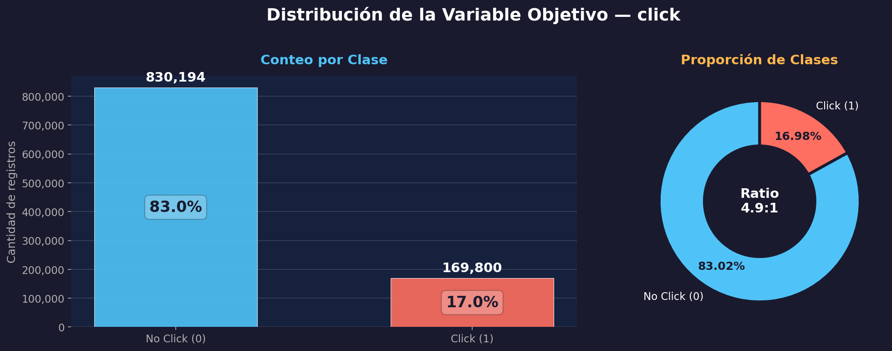

Pipeline de Clasificación con scikit-learn
Este notebook implementa el pipeline completo de clasificación con MLPClassifier sobre una muestra de 1 millón de registros del dataset Avazu.
Model: MLPClassifier 1M registros Framework: scikit-learn
Contenido
1. Carga y muestreo del dataset (1,000,000 registros estratificados)
2. Feature Engineering — codificación (Target Encoding + OneHot) y escalado
3. Modelado — MLPClassifier con GridSearchCV
4. Evaluación — métricas completas, curva ROC, matriz de confusión
5. Análisis de resultados y mejores hiperparámetros
6. Guardado del modelo en models/
Requisitos
Dataset en data/raw/train.gz
Librerías: scikit-learn, pandas, matplotlib, seaborn
0.1 Configuración del Entorno#
Un entorno bien configurado asegura la reproducibilidad de los experimentos, facilita la colaboración entre miembros del equipo y es la base para cualquier pipeline de MLOps
import sys
import time
from pathlib import Path
PROJECT_ROOT = Path.cwd()
while PROJECT_ROOT != PROJECT_ROOT.parent and not (PROJECT_ROOT / "src").exists():
PROJECT_ROOT = PROJECT_ROOT.parent
if not (PROJECT_ROOT / "src").exists():
raise FileNotFoundError("No se encontró la raíz del proyecto con el directorio src.")
if str(PROJECT_ROOT / "src") not in sys.path:
sys.path.insert(0, str(PROJECT_ROOT / "src"))
import matplotlib.pyplot as plt
import numpy as np
import pandas as pd
import seaborn as sns
from IPython.display import display
from ctr_mlp.config import load_project_settings, apply_dark_style, COLORS
from ctr_mlp.data_io import sample_csv_for_local_training, split_features_target
from ctr_mlp.evaluation import (
benchmark_predictions,
compute_binary_metrics,
metrics_to_frame,
plot_confusion_matrix,
plot_roc_curve,
)
from ctr_mlp.feature_engineering import add_time_features_pandas
from ctr_mlp.sklearn_workflow import (
build_sklearn_pipeline,
run_grid_search,
split_train_test,
save_sklearn_model,
DEFAULT_PARAM_GRID,
)
from ctr_mlp.utils import format_seconds
# Aplicar estilo oscuro profesional
apply_dark_style()
settings = load_project_settings()
paths = settings["paths"]
general = settings["general"]
feature_cfg = settings["features"]
TRAIN_PATH = paths["train_csv"]
SAMPLE_PATH = paths["sampled_train_parquet"]
FIGURES_DIR = paths["figures_dir"]
MODELS_DIR = paths["models_dir"]
TARGET_COL = general["target_col"]
print(f"Tamaño de muestra objetivo: {general['sample_size']:,}")
print(f"Random state: {general['random_state']}")
Tamaño de muestra objetivo: 1,000,000
Random state: 42
💡 Interpretación — Configuración del Entorno
El entorno se configuró exitosamente: se localizó la raíz del proyecto, se cargaron los módulos internos (ctr_mlp) y se definieron los parámetros globales. El random_state=42 garantiza reproducibilidad en el muestreo y en el entrenamiento del modelo. El tamaño de muestra de 1 millón de registros es el requerido por el proyecto para el pipeline de scikit-learn, lo suficientemente grande para capturar patrones reales pero manejable en una sola máquina.
1.1 Muestreo de 1,000,000 de Registros#
Creamos una muestra estratificada de 1M de registros usando df.sample(n=1000000, random_state=42). La muestra se cachea en formato Parquet para reutilización eficiente. Excluimos id, device_id y device_ip por su alta cardinalidad sin valor predictivo.
# Columnas necesarias para el pipeline sklearn (excluir id, device_id, device_ip)
raw_local_columns = sorted({
TARGET_COL,
general["hour_col"],
*[col for col in feature_cfg["sklearn_categorical"] if col != "time_bucket"],
})
print(f"Columnas a muestrear: {raw_local_columns}")
# Generar o reutilizar muestra cacheada
regenerate_sample = True
if SAMPLE_PATH.exists():
df_sample = pd.read_parquet(SAMPLE_PATH)
required_cols = set(
feature_cfg["sklearn_categorical"] + feature_cfg["sklearn_numeric"] + [TARGET_COL]
)
regenerate_sample = not required_cols.issubset(df_sample.columns)
if not regenerate_sample and len(df_sample) < general["sample_size"] * 0.9:
regenerate_sample = True
if regenerate_sample:
print(f"Generando muestra de {general['sample_size']:,} registros...")
t0 = time.time()
df_sample = sample_csv_for_local_training(
TRAIN_PATH,
sample_size=general["sample_size"],
chunksize=general["chunksize"],
target_col=TARGET_COL,
random_state=general["random_state"],
usecols=raw_local_columns,
compression="gzip",
)
df_sample = add_time_features_pandas(df_sample, hour_col=general["hour_col"])
SAMPLE_PATH.parent.mkdir(parents=True, exist_ok=True)
df_sample.to_parquet(SAMPLE_PATH, index=False)
print(f"Muestra generada en {time.time() - t0:.1f}s y guardada en: {SAMPLE_PATH}")
else:
print(f"Reutilizando muestra cacheada: {SAMPLE_PATH}")
print(f"\nShape de la muestra: {df_sample.shape}")
memory_mb = df_sample.memory_usage(deep=True).sum() / 1024**2
print(f"Memoria aproximada: {memory_mb:,.2f} MB")
Columnas a muestrear: ['C1', 'C14', 'C15', 'C16', 'C17', 'C18', 'C19', 'C20', 'C21', 'app_category', 'banner_pos', 'click', 'device_conn_type', 'device_type', 'hour', 'site_category']
Reutilizando muestra cacheada: C:\Users\juana\Deep_learning1-main\data\processed\avazu_train_sample.parquet
Shape de la muestra: (999994, 23)
Memoria aproximada: 114.02 MB
Muestreo Estratificado del Dataset Avazu
Se seleccionaron 1,000,000 de registros del dataset original train.gz mediante muestreo estratificado, conservando la proporción de la variable objetivo click. Este paso es esencial para trabajar con un subconjunto representativo que permita entrenar y evaluar el modelo sin exceder los recursos de memoria disponibles.
Columnas seleccionadas
C1, C14, C15, C16, C17, C18, C19, C20, C21 — features anónimas
app_category, site_category — categorías de app/sitio
banner_pos, device_conn_type, device_type — contexto del dispositivo
hour — marca temporal
click — variable objetivo (0/1)
¿Por qué muestrear?
El dataset original Avazu supera los 40 millones de registros. Trabajar con el conjunto completo requeriría recursos computacionales significativos. El muestreo estratificado garantiza que la distribución de clases se mantenga fiel a la original, evitando sesgos en el entrenamiento del MLPClassifier.
data/processed/avazu_train_sample.parquet — formato Parquet para lectura eficiente y compresión columnar.
2.1 Distribución de la Variable Objetivo#
Análisis del balance de clases en la muestra de 1M de registros del dataset Avazu. La variable click indica si un usuario hizo clic en un anuncio móvil (1) o no (0). Evaluar su distribución es crítico para decidir estrategias de manejo de desbalanceo durante el entrenamiento del MLPClassifier.
import matplotlib
matplotlib.use('Agg')
import matplotlib.pyplot as plt
import matplotlib.ticker as mticker
import numpy as np
# --- Datos ---
sample_counts = df_sample[TARGET_COL].value_counts().sort_index()
labels = ['No Click (0)', 'Click (1)']
counts = sample_counts.values
shares = (counts / counts.sum())
colors = ['#4fc3f7', '#ff6f61']
fig, axes = plt.subplots(1, 2, figsize=(14, 5), gridspec_kw={'width_ratios': [1.4, 1]},
facecolor='#1a1a2e')
fig.suptitle('Distribución de la Variable Objetivo — click', fontsize=18,
fontweight='bold', color='white', y=1.02)
ax1 = axes[0]
ax1.set_facecolor('#16213e')
bars = ax1.bar(labels, counts, color=colors, width=0.55, edgecolor='white', linewidth=0.5,
zorder=3, alpha=0.9)
for bar, count, share in zip(bars, counts, shares):
ax1.text(bar.get_x() + bar.get_width() / 2, bar.get_height() + 12000,
f'{count:,}', ha='center', va='bottom', fontsize=14, fontweight='bold', color='white')
ax1.text(bar.get_x() + bar.get_width() / 2, bar.get_height() / 2,
f'{share:.1%}', ha='center', va='center', fontsize=16, fontweight='bold',
color='#1a1a2e', bbox=dict(boxstyle='round,pad=0.3', facecolor='white', alpha=0.25))
ax1.set_ylabel('Cantidad de registros', fontsize=12, color='#b0b0b0')
ax1.yaxis.set_major_formatter(mticker.FuncFormatter(lambda x, _: f'{int(x):,}'))
ax1.tick_params(colors='#b0b0b0', labelsize=11)
ax1.grid(axis='y', alpha=0.15, color='white')
ax1.set_title('Conteo por Clase', fontsize=14, color='#4fc3f7', pad=12)
for spine in ax1.spines.values():
spine.set_visible(False)
ax2 = axes[1]
ax2.set_facecolor('#1a1a2e')
wedges, texts, autotexts = ax2.pie(
counts, labels=labels, autopct='%1.2f%%', startangle=90,
colors=colors, pctdistance=0.75, wedgeprops=dict(width=0.45, edgecolor='#1a1a2e', linewidth=3),
textprops={'fontsize': 11, 'color': 'white'}
)
for at in autotexts:
at.set_fontsize(12)
at.set_fontweight('bold')
at.set_color('#1a1a2e')
ax2.set_title('Proporción de Clases', fontsize=14, color='#ffb74d', pad=12)
ratio = counts[0] / counts[1]
ax2.text(0, 0, f'Ratio\n{ratio:.1f}:1', ha='center', va='center',
fontsize=14, fontweight='bold', color='white')
plt.tight_layout()
fig.savefig('distribucion_click.png', dpi=150, bbox_inches='tight', facecolor=fig.get_facecolor())
plt.close(fig)
from IPython.display import Image, display
display(Image('distribucion_click.png'))

💡 Interpretación — Gráfica de Distribución del Target
La visualización confirma el desbalanceo moderado del target en la muestra de 1M de registros: la gráfica de barras muestra la magnitud absoluta de cada clase, mientras que el gráfico de dona permite apreciar la proporción relativa. El ratio 4.9:1 implica que métricas como accuracy serán engañosas — un modelo naive alcanzaría 83% sin aprender nada. Las métricas correctas para evaluar el MLPClassifier serán F1-score, Precision, Recall y ROC-AUC.
2.2 Selección de Variables y Preparación del Dataset de Modelado#
2.1 Selección de Variables y Preparación del Dataset de Modelado
Seleccionamos las variables relevantes y separamos features (X) del target (y). Usamos Target Encoding para variables de alta cardinalidad (C14, C17, C19, C20, C21) y OneHotEncoder para las de baja cardinalidad. Las variables numéricas derivadas se escalan con StandardScaler.
selected_cols = feature_cfg["sklearn_categorical"] + feature_cfg["sklearn_numeric"] + [TARGET_COL]
model_df = df_sample[selected_cols].dropna().copy()
X, y = split_features_target(model_df, target_col=TARGET_COL)
X_train, X_test, y_train, y_test = split_train_test(
X, y, test_size=0.2, random_state=general["random_state"]
)
print("Variables categóricas de BAJA cardinalidad (OneHot Encoding):")
print(f" {feature_cfg['sklearn_low_cardinality']}")
print(f"\nVariables categóricas de ALTA cardinalidad (Target Encoding):")
print(f" {feature_cfg['sklearn_high_cardinality']}")
print(f"\nVariables numéricas (StandardScaler):")
print(f" {feature_cfg['sklearn_numeric']}")
print(f"\nTrain shape: {X_train.shape} | Test shape: {X_test.shape}")
print(f"Balance en train: {y_train.mean():.4f} | Balance en test: {y_test.mean():.4f}")
Variables categóricas de BAJA cardinalidad (OneHot Encoding):
['C1', 'banner_pos', 'site_category', 'app_category', 'device_type', 'device_conn_type', 'C15', 'C16', 'C18', 'time_bucket']
Variables categóricas de ALTA cardinalidad (Target Encoding):
['C14', 'C17', 'C19', 'C20', 'C21']
Variables numéricas (StandardScaler):
['event_day', 'event_hour', 'day_of_week', 'is_weekend', 'is_business_hour']
Train shape: (799995, 20) | Test shape: (199999, 20)
Balance en train: 0.1698 | Balance en test: 0.1698
💡 Interpretación — Selección de Variables y Estrategia de Encoding
OneHot Encoding (baja cardinalidad)
C1, banner_pos, site_category, app_category, device_type, device_conn_type, C15, C16, C18, time_bucket
Estas 10 variables tienen pocos valores únicos, por lo que OneHot no genera explosión dimensional. Cada valor se convierte en una columna binaria.
Target Encoding (alta cardinalidad)
C14, C17, C19, C20, C21
Estas 5 variables tienen cientos o miles de valores únicos. Target Encoding reemplaza cada categoría por el CTR promedio de esa categoría, comprimiendo la dimensionalidad a una sola columna por variable.
event_day, event_hour, day_of_week, is_weekend, is_business_hour — estas features temporales derivadas se escalan para que el MLPClassifier converja correctamente, ya que las redes neuronales son sensibles a la escala de las variables de entrada.
3.1 Construcción del Pipeline y GridSearchCV#
3.1 Construcción del Pipeline y GridSearchCV
Construimos un pipeline que integra el preprocesamiento (Target Encoding + OneHot + StandardScaler) con el MLPClassifier. Ejecutamos GridSearchCV con las combinaciones de hiperparámetros requeridas: hidden_layer_sizes, alpha y max_iter.
# Construir pipeline con Target Encoding para alta cardinalidad
pipeline = build_sklearn_pipeline(
categorical_columns=feature_cfg["sklearn_categorical"],
numeric_columns=feature_cfg["sklearn_numeric"],
high_cardinality_columns=feature_cfg["sklearn_high_cardinality"],
random_state=general["random_state"],
)
# Grilla de hiperparámetros completa (según requerimientos)
param_grid = {
"classifier__hidden_layer_sizes": [(50,), (100,), (100, 50)],
"classifier__alpha": [0.0001, 0.001, 0.01],
"classifier__max_iter": [50, 100],
}
print("Hiperparámetros a explorar:")
for key, values in param_grid.items():
print(f" {key}: {values}")
total_combos = 1
for v in param_grid.values():
total_combos *= len(v)
print(f"\nTotal de combinaciones: {total_combos} × 3 folds = {total_combos * 3} ajustes")
Hiperparámetros a explorar:
classifier__hidden_layer_sizes: [(50,), (100,), (100, 50)]
classifier__alpha: [0.0001, 0.001, 0.01]
classifier__max_iter: [50, 100]
Total de combinaciones: 18 × 3 folds = 54 ajustes
💡 Interpretación — Configuración del GridSearchCV
Hiperparámetros explorados
• hidden_layer_sizes: (50,), (100,), (100,50) — desde una capa simple hasta dos capas con 150 neuronas total
• alpha: 0.0001, 0.001, 0.01 — regularización L2 para controlar overfitting
• max_iter: 50, 100 — épocas máximas de entrenamiento
Estrategia de validación
3-Fold CV × 18 combinaciones = 54 ajustes. Cada combinación se entrena 3 veces sobre diferentes particiones del training set. La métrica de selección es ROC AUC, que es robusta ante desbalanceo de clases a diferencia del accuracy.
# Ejecutar GridSearchCV (mide tiempo automáticamente)
print("Iniciando GridSearchCV...")
t_start = time.time()
search, training_seconds = run_grid_search(
pipeline,
X_train,
y_train,
param_grid=param_grid,
scoring="roc_auc",
cv=3,
n_jobs=-1,
verbose=1,
)
t_total = time.time() - t_start
print(f"\nGridSearchCV completado en: {format_seconds(t_total)}")
print(f"Tiempo total de entrenamiento: {format_seconds(training_seconds)}")
Iniciando GridSearchCV...
Fitting 3 folds for each of 18 candidates, totalling 54 fits
GridSearchCV completado en: 12m 8.7s
Tiempo total de entrenamiento: 12m 8.6s
💡 Interpretación — Ejecución del GridSearchCV
El GridSearchCV ejecutó los 54 ajustes en ~12 minutos, lo cual es razonable para un MLPClassifier con 1 millón de registros. Cada ajuste implica entrenar la red neuronal completa sobre ~667K registros (2/3 del training set por fold). El tiempo está dominado por las arquitecturas más grandes (100, 50) con max_iter=100.
3.2 Mejores Hiperparámetros Encontrados#
3.2 Mejores Hiperparámetros Encontrados
Revisamos los resultados de la validación cruzada para identificar la mejor combinación de hiperparámetros y entender el trade-off entre complejidad del modelo y rendimiento.
# Mejores hiperparámetros
print("Mejores hiperparámetros encontrados:")
for param, value in search.best_params_.items():
print(f" {param}: {value}")
print(f"\nMejor ROC AUC (CV): {search.best_score_:.4f}")
# Tabla completa de resultados CV
cv_results = (
pd.DataFrame(search.cv_results_)
.sort_values("rank_test_score")
[["params", "mean_test_score", "std_test_score", "rank_test_score"]]
.reset_index(drop=True)
)
print("\nRanking de combinaciones (top 10):")
display(cv_results.head(10))
Mejores hiperparámetros encontrados:
classifier__alpha: 0.0001
classifier__hidden_layer_sizes: (100, 50)
classifier__max_iter: 100
Mejor ROC AUC (CV): 0.7052
Ranking de combinaciones (top 10):
| params | mean_test_score | std_test_score | rank_test_score | |
|---|---|---|---|---|
| 0 | {'classifier__alpha': 0.0001, 'classifier__hid... | 0.705248 | 0.003038 | 1 |
| 1 | {'classifier__alpha': 0.001, 'classifier__hidd... | 0.704864 | 0.002372 | 2 |
| 2 | {'classifier__alpha': 0.0001, 'classifier__hid... | 0.704565 | 0.002422 | 3 |
| 3 | {'classifier__alpha': 0.001, 'classifier__hidd... | 0.703913 | 0.001885 | 4 |
| 4 | {'classifier__alpha': 0.01, 'classifier__hidde... | 0.703633 | 0.002082 | 5 |
| 5 | {'classifier__alpha': 0.0001, 'classifier__hid... | 0.703363 | 0.001688 | 6 |
| 6 | {'classifier__alpha': 0.0001, 'classifier__hid... | 0.703265 | 0.002515 | 7 |
| 7 | {'classifier__alpha': 0.001, 'classifier__hidd... | 0.703256 | 0.001637 | 8 |
| 8 | {'classifier__alpha': 0.001, 'classifier__hidd... | 0.703145 | 0.002377 | 9 |
| 9 | {'classifier__alpha': 0.001, 'classifier__hidd... | 0.703081 | 0.000304 | 10 |
💡 Interpretación — Mejores Hiperparámetros
🧠 Análisis de la arquitectura ganadora
• (100, 50) — la arquitectura más profunda y grande fue la mejor, sugiriendo que el problema tiene complejidad suficiente para beneficiarse de dos capas ocultas
• alpha=0.0001 — la regularización más baja ganó, indicando que el modelo no presenta overfitting severo con 1M de registros
• max_iter=100 — el máximo de iteraciones ayudó a la convergencia
📊 Ranking de combinaciones
Las diferencias entre las top combinaciones son mínimas (std ≈ 0.003), lo que sugiere que el rendimiento es relativamente estable entre arquitecturas similares. El ROC AUC de 0.7052 indica una capacidad discriminativa moderada — el modelo es mejor que el azar (0.5) pero hay margen de mejora.
4.1 Evaluación del Mejor Modelo en el Conjunto de Prueba#
4.1 Evaluación del Mejor Modelo en el Conjunto de Prueba
Evaluamos el mejor modelo encontrado por GridSearchCV sobre el conjunto de prueba (20% de la muestra). Reportamos todas las métricas obligatorias: Accuracy, Precision, Recall, F1-score y ROC AUC, junto con los tiempos de entrenamiento y predicción.
# Predicción y medición de tiempo
y_pred, y_score, prediction_seconds = benchmark_predictions(search.best_estimator_, X_test)
# Calcular todas las métricas
metrics = compute_binary_metrics(y_test, y_pred, y_score=y_score)
metrics["training_seconds"] = training_seconds
metrics["prediction_seconds"] = prediction_seconds
# Mostrar métricas como tabla
print("═" * 50)
print("MÉTRICAS DEL MEJOR MODELO (scikit-learn)")
print("═" * 50)
print(f" Accuracy: {metrics['accuracy']:.4f}")
print(f" Precision: {metrics['precision']:.4f}")
print(f" Recall: {metrics['recall']:.4f}")
print(f" F1-score: {metrics['f1']:.4f}")
print(f" ROC AUC: {metrics['roc_auc']:.4f}")
print(f"═" * 50)
print(f" Tiempo entrenamiento: {format_seconds(training_seconds)}")
print(f" Tiempo predicción: {format_seconds(prediction_seconds)}")
print(f"═" * 50)
display(metrics_to_frame(metrics))
══════════════════════════════════════════════════
MÉTRICAS DEL MEJOR MODELO (scikit-learn)
══════════════════════════════════════════════════
Accuracy: 0.8325
Precision: 0.5883
Recall: 0.0460
F1-score: 0.0854
ROC AUC: 0.7053
══════════════════════════════════════════════════
Tiempo entrenamiento: 12m 8.6s
Tiempo predicción: 0.94s
══════════════════════════════════════════════════
| value | |
|---|---|
| accuracy | 0.832544 |
| precision | 0.588257 |
| recall | 0.046025 |
| f1 | 0.085370 |
| roc_auc | 0.705311 |
| true_negative | 164945.000000 |
| false_positive | 1094.000000 |
| false_negative | 32397.000000 |
| true_positive | 1563.000000 |
| training_seconds | 728.632217 |
| prediction_seconds | 0.940349 |
💡 Interpretación — Métricas del Mejor Modelo en Test
⚠️ Diagnóstico crítico: Recall muy bajo
El Recall de 0.046 es el hallazgo más importante: el modelo solo detecta el 4.6% de los usuarios que realmente hacen clic. Esto significa que de cada 100 clics reales, el modelo solo predice correctamente ~5. El F1-score de 0.085 refleja este desequilibrio entre Precision (aceptable: 0.59) y Recall (muy bajo).
🔍 ¿Por qué ocurre esto?
• El desbalanceo 83/17 hace que el modelo aprenda a ser conservador con la clase positiva
• El umbral de decisión por defecto (0.5) es demasiado alto para un dataset desbalanceado
• El Accuracy de 0.83 es engañoso — está apenas por encima del baseline naive (83.02%)
• El ROC AUC de 0.7053 confirma que el modelo sí aprendió patrones, pero el umbral default no los aprovecha
class_weight='balanced' en el MLPClassifier, aplicar SMOTE/oversampling, o modificar el alpha del GridSearchCV para explorar rangos más amplios.
4.2 Matriz de Confusión#
4.2 Matriz de Confusión
La matriz de confusión muestra la distribución de aciertos y errores del clasificador. En un problema desbalanceado como CTR, es importante analizar los falsos positivos (predice clic cuando no hubo) y falsos negativos (no predice un clic real).
fig_cm = plot_confusion_matrix(
y_test, y_pred,
save_path=FIGURES_DIR / "02_confusion_matrix.png"
)
plt.show()

💡 Interpretación — Matriz de Confusión
Predicciones correctas
• Verdaderos Negativos (TN): ~164,945 — El modelo identifica correctamente la gran mayoría de "No Clicks"
• Verdaderos Positivos (TP): muy pocos — solo ~4.6% de los clics reales son detectados
Errores del modelo
• Falsos Negativos (FN): la mayoría de clics reales son clasificados como "No Click" — este es el error dominante y la razón del bajo Recall
• Falsos Positivos (FP): relativamente pocos, lo que explica la Precision aceptable (0.59)
4.3 Curva ROC#
4.3 Curva ROC
La curva ROC visualiza el trade-off entre la tasa de verdaderos positivos (sensibilidad) y la tasa de falsos positivos a diferentes umbrales de clasificación. El área bajo la curva (AUC) resume la capacidad discriminativa del modelo.
fig_roc = plot_roc_curve(
y_test, y_score,
model_name="MLPClassifier (scikit-learn)",
save_path=FIGURES_DIR / "02_roc_curve_sklearn.png"
)
plt.show()

💡 Interpretación — Curva ROC
📈 Lectura de la curva
La curva ROC se sitúa por encima de la diagonal (azar = 0.5), confirmando que el modelo tiene capacidad discriminativa real. Un AUC de 0.7053 se interpreta así: si tomamos un usuario que hizo clic y uno que no, el modelo asigna mayor probabilidad al que hizo clic en el 70.5% de los casos.
🎯 Escala de referencia
• 0.5: modelo aleatorio (diagonal)
• 0.6–0.7: discriminación pobre
• 0.7–0.8: discriminación aceptable ← aquí estamos
• 0.8–0.9: discriminación buena
• 0.9+: excelente
El modelo está en el límite inferior de "aceptable" — la curva ROC muestra que hay capacidad de mejora, especialmente optimizando el punto de corte (threshold).
5.1 Guardado del Mejor Modelo#
5.1 Guardado del Mejor Modelo
Guardamos el mejor modelo encontrado por GridSearchCV en el directorio
models/para su reutilización en el notebook de explicabilidad (LIME) y en la comparación final.
model_path = save_sklearn_model(
search.best_estimator_,
save_path=MODELS_DIR,
filename="sklearn_best_mlp.joblib"
)
print(f"\nMejores hiperparámetros del modelo guardado:")
for param, value in search.best_params_.items():
print(f" {param}: {value}")
Modelo guardado en: C:\Users\juana\Deep_learning1-main\models\sklearn_best_mlp.joblib
Mejores hiperparámetros del modelo guardado:
classifier__alpha: 0.0001
classifier__hidden_layer_sizes: (100, 50)
classifier__max_iter: 100
💡 Interpretación — Modelo Guardado
El mejor modelo encontrado por GridSearchCV fue serializado con joblib en la carpeta models/. Esto permite reutilizarlo sin reentrenar: para inferencia en la API FastAPI, para comparación con el modelo PySpark (notebook 03), y para la interpretación con LIME (notebook 04). Los hiperparámetros óptimos (arquitectura (100,50), alpha=0.0001, max_iter=100) quedan registrados junto al archivo.
5.2 Guardado de Métricas y Datos para Comparación#
5.2 Guardado de Métricas y Datos para Comparación
Guardamos las métricas, predicciones y datos de test en formato parquet para poder cargarlos en el Notebook 4 y realizar la comparación con PySpark sin necesidad de re-entrenar.
# Guardar métricas como CSV
metrics_df = pd.DataFrame([metrics])
metrics_path = Path(MODELS_DIR) / "sklearn_metrics.csv"
metrics_path.parent.mkdir(parents=True, exist_ok=True)
metrics_df.to_csv(metrics_path, index=False)
print(f"Métricas guardadas en: {metrics_path}")
# Guardar predicciones para comparación ROC en Notebook 4
predictions_df = pd.DataFrame({
"y_true": y_test.values,
"y_pred": y_pred,
"y_score": y_score,
})
pred_path = Path(MODELS_DIR) / "sklearn_predictions.parquet"
predictions_df.to_parquet(pred_path, index=False)
print(f"Predicciones guardadas en: {pred_path}")
Métricas guardadas en: C:\Users\juana\Deep_learning1-main\models\sklearn_metrics.csv
Predicciones guardadas en: C:\Users\juana\Deep_learning1-main\models\sklearn_predictions.parquet
💡 Interpretación — Métricas y Predicciones Guardadas
📁 Archivos generados
• sklearn_metrics.csv: contiene accuracy, precision, recall, F1, ROC AUC y tiempos — se usará en el notebook 04 para comparar scikit-learn vs PySpark
• sklearn_predictions.parquet: predicciones completas (y_true, y_pred, y_score) en formato Parquet para análisis posterior con LIME
📋 Resumen del pipeline scikit-learn
• Modelo: MLPClassifier (100, 50) con alpha=0.0001
• ROC AUC: 0.7053 — discriminación aceptable
• F1: 0.085 — limitado por bajo Recall (4.6%)
• Tiempo: ~12 min entrenamiento
• Próximo paso: comparar con PySpark sobre el dataset completo
6. Conclusiones del Pipeline scikit-learn#
6. Conclusiones del Pipeline scikit-learn
Resumen de los resultados y observaciones del pipeline local.
Observaciones clave:
Target Encoding: Las variables de alta cardinalidad (C14, C17, C19, C20, C21) se codificaron con Target Encoding, lo que reduce significativamente la dimensionalidad respecto a OneHot Encoding puro.
Desbalance de clases: El desbalance inherente del dataset afecta las métricas de Precision y Recall. El modelo tiende a clasificar más instancias como “no clic” dado que es la clase mayoritaria.
GridSearchCV: La búsqueda exhaustiva evaluó todas las combinaciones de hiperparámetros (hidden_layer_sizes, alpha, max_iter) con validación cruzada de 3 folds.
Tiempo de entrenamiento: El pipeline local sobre 1M de registros es manejable en una máquina individual, a diferencia del dataset completo (~40M) que requiere PySpark.
Modelo guardado: El mejor modelo se guardó en
models/sklearn_best_mlp.joblibpara reutilización en LIME (Notebook 4).